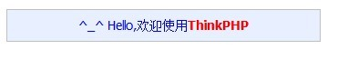

ThinkPHP采用单一入口模式进行项目部署和访问，无论完成什么功能，一个项目都有一个统一（但不一定是唯一）的入口。应该说，所有项目都是从入口文件开始的，并且所有的项目的入口文件是类似的，入口文件中主要包括：
- 定义框架路径、项目路径和项目名称（可选）
- 定义调试模式和运行模式的相关常量（可选）
- 载入框架入口文件（必须）
首先，在服务器或者本地的Web目录下面创建一个App目录，并且把下载的ThinkPHP框架的ThinkPHP目录拷贝到App目录下面，然后在App目录下面创建一个index.php文件，该文件就是我们要创建项目的入口文件。
新版的入口文件更加简化，默认情况下，只需要在该文件中添加一行代码即可：
<?php
//加载框架入口文件
require './ThinkPHP/ThinkPHP.php';然后，我们打开浏览器，输入地址并运行：
http://localhost/App/
就会看到欢迎页面：

表示ThinkPHP已经成功执行，这个时候，系统已经在App下面自动生成了项目相关目录，并写入了初始Action。（注意：如果是类Unix或者Linux环境下测试的话，需要对App目录设置可写权限，否则无法自动生成目录结构）入口文件中还可以添加系统或者应用的常量定义，如果我们的项目需要采用其他的模式运行（例如，采用命令行模式运行），那么可以定义MODE_NAME如下：
define('MODE_NAME','cli');如果没有在项目入口文件中设置MODE_NAME常量的话，就表示采用系统的标准模式运行。由于模式扩展可以改变底层的运行机制和行为定义，本手册中的内容如无特别说明，功能描述均表示运行于标准模式下面。
入口文件并不一定都是指index.php 文件，因为我们可以为不同的项目创建不同的入口文件，例如，前台项目的入口文件为index.php ，后台项目的入口文件可能是admin.php。